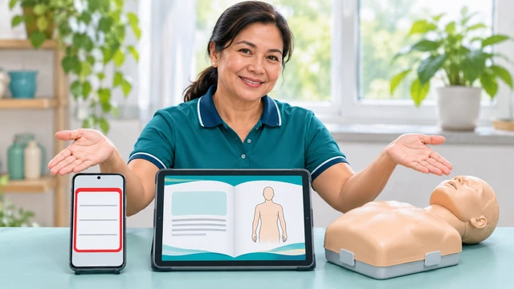
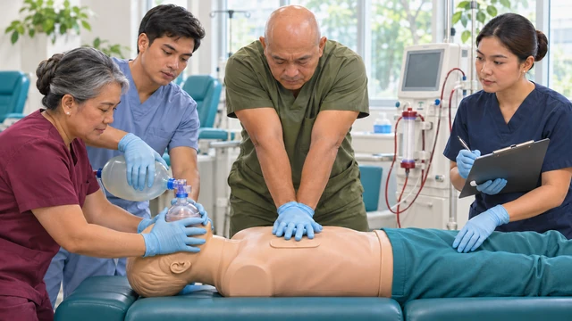
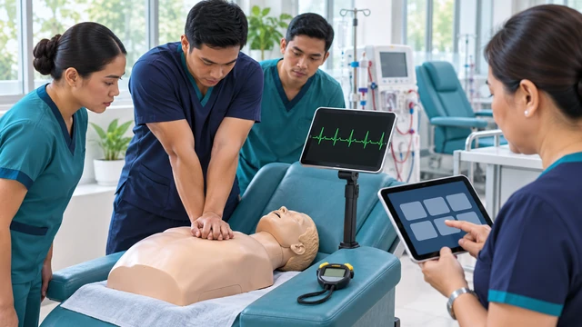
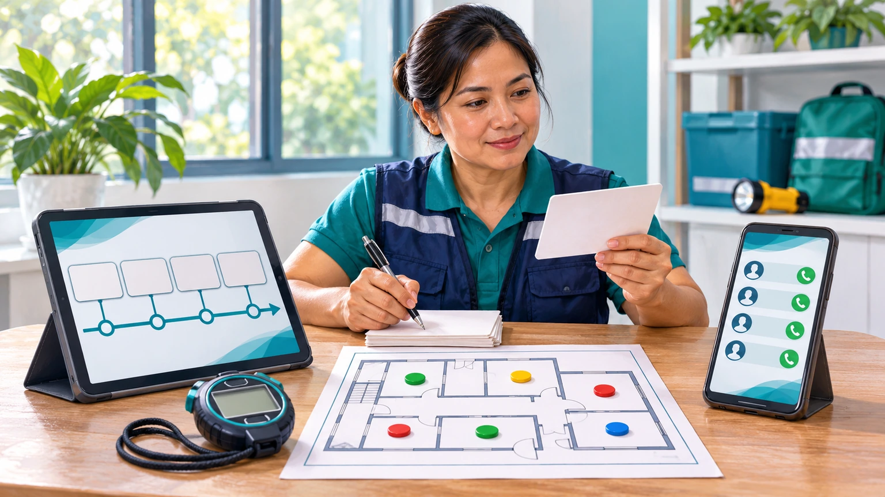

Act, learn, practice
Emergency Readiness sits beside the role tracks because emergencies cut across every role. A nurse assistant starts compressions; a technician brings the defibrillator; the circuit nurse manages the machine; the physician-on-duty leads. When a typhoon, an earthquake or a fire hits, the same team keeps the patients on the machines safe and keeps every patient dialyzed until the unit reopens. There are two courses: one for the arrest at the chair, one for the events that harm many patients at once.
Read the transcript
Meet Paratus. It is Latin for ready, and it is the emergency readiness app of Renal Care Matters, built for dialysis teams. When something goes wrong at the chair, open the Emergency Quick Cards: nineteen one-screen cards, from a code on dialysis and a blood leak alarm to power failure, earthquake, fire and typhoon. Each card shows who does what, step by step, with one critical warning you cannot miss. The details stay folded until the event is over. Then learn. The Resuscitation Lab has thirteen modules, from basic life support at the chair to an arrest on the machine, hyperkalemia, children and the team debrief. Disaster Preparedness adds twelve more: typhoons and floods, earthquakes, fire and evacuation, power and water, and keeping every patient dialyzed. Then practice. Run timed megacodes with a live monitor on a second screen, or a disaster tabletop drill with timed injects. Tap the red Paratus tab on the left, install the app, and download everything once. Then the cards, the courses and the drills all work with no signal, even when the power and the network are down. In a real event, follow your unit protocol, and always ask the Attending Nephrologist for guidance. Find Paratus at Renal Care Matters dot com.


LearnDialysis Team Resuscitation LabThirteen modules: the basic algorithms, algorithm recognition, BLS at the chair, adult ACLS-aligned care, arrest on the machine, hyperkalemia, children, ROSC and the team. LearnDisaster Preparedness and ResponseTwelve modules: why disasters hurt dialysis patients twice, the unit plan and command, ready patients, typhoons and floods, earthquakes, fire, power and water, heat and ashfall, keeping everyone dialyzed, reopening and drills.
PracticeMegacode Practice LabAlgorithm recognition rounds, timed megacodes, and a facilitator recorder with a shared monitor display for resuscitation drills.
PracticeDisaster DrillsA tabletop simulator with timed injects, a call-down drill timer, and a printable evacuation and patient-accounting sheet.Also: the facilitator kits for resuscitation and disaster drills, the Resuscitation Lab toolkit, and Same event, every role.
Resuscitation readiness by track
The table is an Academy recommendation. Two levels are verified Philippine rules: dialysis nurses hold a current BLS certificate, and the physician-on-duty and at least one nurse on every shift hold current ACLS from a DOH-accredited provider (DOH Administrative Order No. 2012-0001; Philippine Society of Nephrology 2024 guidelines). No DOH or PSN requirement for PALS in units that treat children was verified; it is shown as an Academy recommendation. Certificates come only from an authorized training center.
Disaster modules by role
| Role group | Disaster Preparedness and Response |
|---|---|
| Hemodialysis, charge and head nurses | All modules; Modules 6 to 8 hands-on; emergency take-off drill passed |
| Safety nurse (or head nurse) | All modules, plus the Module 12 facilitator capstone |
| Physician-on-duty, Dialysis Clinical Head, attending nephrologist | Modules 1, 3, 5, 8, 10, 11 |
| Technicians (dialysis, water treatment, biomedical, reprocessing) | Modules 1, 2, 6, 7, 8, 11 |
| Nurse assistants, support staff | Modules 1, 6, 7; the evacuation drill |
| Unit manager, unit owner | Modules 1, 2, 3, 10, 11, 12 |
| Social worker, records officer, dietitian | Modules 1, 3, 4, 10 |
The modules
Dialysis Team Resuscitation Lab
- Module 1: Ready Before the Collapse
- Module 2: How Resuscitation Algorithms Think
- Module 3: Recognizing the Right Algorithm
- Module 4: BLS at the Dialysis Chair
- Module 5: Adult Cardiac Arrest: Shockable and Nonshockable
- Module 6: Bradycardia and Tachycardia With a Pulse
- Module 7: Arrest in the Dialysis Chair: Machine, Circuit and Access
- Module 8: Hyperkalemia: With a Pulse and in Arrest
- Module 9: Circuit Emergencies That Become Resuscitations
- Module 10: Pediatric BLS and the Child Who Is Getting Worse
- Module 11: Pediatric Arrest and Rhythms During Dialysis
- Module 12: Pulse Restored: ROSC, Transfer and Handover
- Module 13: Team, Code Status, Debrief and Practice
Disaster Preparedness and Response
- Module 1: Why Disasters Hurt Dialysis Patients Twice
- Module 2: Know Your Unit's Hazards and Dependencies
- Module 3: The Unit Plan and Who Commands
- Module 4: Ready Patients: Card, Diet, Medicines, Contacts
- Module 5: Typhoons and Floods
- Module 6: Earthquake on the Machine
- Module 7: Fire and Evacuation
- Module 8: Power, Water and Supplies
- Module 9: Heat, Ashfall and Outbreaks
- Module 10: Keeping Everyone Dialyzed: Priority, Placement, Tracking
- Module 11: Reopening Safely and Recovering
- Module 12: Running Drills That Change Practice
Every drill has an owner, a facilitator and a record
A drill with no named owner does not happen. The table is the Academy’s suggested division of work; your unit may assign it differently, but every row needs a name and a deputy for leave and night shifts.
| Drill | Owns the schedule | Runs it (facilitator) | Takes part | Signs the record |
|---|---|---|---|---|
| Resuscitation (Dialysis Team Resuscitation Lab) | ||||
| Weekly five-minute refresher at handover | Head nurse | Charge nurse on the shift | Everyone on that shift | Charge nurse |
| Monthly megacode | Head nurse | Charge nurse or physician-on-duty with current Advanced Cardiovascular Life Support (ACLS); Pediatric Advanced Life Support (PALS) for a pediatric case | The shift team in rotating roles, plus a named watcher | Head nurse |
| Quarterly integrated megacode | Dialysis Clinical Head | Unit educator or a certified Basic Life Support (BLS) or ACLS instructor | Nurses, technicians, nursing assistants, physician-on-duty | Dialysis Clinical Head |
| Same-day debrief after a real resuscitation | Charge nurse | Charge nurse or physician-on-duty | Everyone involved | Head nurse; system findings to the Dialysis Clinical Head |
| Disaster Preparedness and Response | ||||
| Patient call-list check (call-down drill), before typhoon season | Unit manager | Safety nurse (or head nurse) | Charge nurses, records officer, social worker | Unit manager |
| Disaster tabletop exercise, before typhoon season | Unit manager | Safety nurse (or head nurse), with the Dialysis Clinical Head leading the clinical decisions | Head nurse, charge nurses, technicians (water and power), biomedical technician, social worker, records officer | Unit manager; findings to the unit owner |
| Power-loss and blood-return-without-power drill, twice a year | Head nurse | Safety nurse (or head nurse) with the biomedical technician | Nurses and technicians on the shift, at an empty station | Head nurse |
| Earthquake drill, timed with the quarterly Nationwide Simultaneous Earthquake Drill (NSED) where possible | Unit manager | Safety nurse (or head nurse) | Whole shift; patients take part only in the “protect in place” step if they agree | Unit manager |
| Evacuation and patient-accounting drill, yearly | Unit manager | Safety nurse (or head nurse), with the building or facilities officer | Whole shift, with no patients on machines | Unit manager; findings to the unit owner |
| Same-day debrief after a real disruption | Unit manager | Safety nurse (or head nurse) or Dialysis Clinical Head | Everyone involved | Unit manager; system findings to the unit owner |
Who facilitates disaster preparedness and response
The facilitator is the unit’s safety nurse (Special Dialysis Nurse Roles, Module 7): the nurse designated to plan, check readiness and run drills. Most units have not yet designated one; until they do, the head nurse facilitates, and naming a safety nurse is recommended. Three people stand behind that role. The unit manager owns the disaster plan, the drill schedule, the receiving-unit agreements and the budget. The Dialysis Clinical Head leads the clinical decisions in a tabletop: who dialyzes early before a storm, who is placed first when the roster must move, and the emergency diet with the dietitian. The unit owner receives the findings and funds the fixes. During a real event the safety nurse does not command: the charge nurse and the physician direct the response, and licensed engineers and technicians handle the building, water and machines.
A hospital-based unit runs its drills inside the hospital’s own disaster plan and emergency preparedness committee, built under the Department of Health’s National Policy on Disaster Risk Reduction and Management in Health (DRRM-H), Administrative Order No. 2019-0046, and the Hospitals Safe from Disasters policy, Administrative Order No. 2013-0014. A freestanding unit should still coordinate with its city or municipal disaster risk reduction and management office, set up under Republic Act No. 10121, for evacuation routes and community warnings. Who must attend which drill is a unit decision; this page does not state a licensing requirement.
Two rules for every drill. No drill on a working floor without a named watcher whose only job is the patients still dialyzing. Every system problem a drill finds gets an owner and a date, the same as a problem found in a real event.
The practice record. For each drill: the date, the scenario, who took which role, the one or two learning goals and whether they were met, the timeline, and each action with its owner and date. The head nurse keeps resuscitation records and the unit manager keeps disaster records; the Dialysis Clinical Head reviews both each quarter, with any real events.
A practice rhythm for the unit
Onboarding: Modules 1 to 4 and 7, a crash-cart and defibrillator orientation, an observed BLS check, one team scenario. Weekly: a five-minute refresher at handover. Monthly: one megacode on the shared display, with a five-question debrief. Quarterly: an integrated megacode with role rotation and the facilitator recorder. After any real event or equipment change: a targeted rehearsal. Disaster drills: a call-down check and a tabletop exercise before typhoon season, a power-loss drill twice a year, an earthquake drill with the quarterly NSED, and an evacuation drill yearly. This cadence is an Academy teaching choice; studies support spaced practice but do not define the best interval for a dialysis unit.
Not certification
The Emergency Readiness section is an educational reviewer and practice resource. It is not an American Heart Association course, it gives no BLS, ACLS or PALS certification, and online completion does not establish hands-on competence. Your unit protocol, crash-cart stock and machine manufacturer’s instructions govern every real event; always ask the attending nephrologist for guidance.